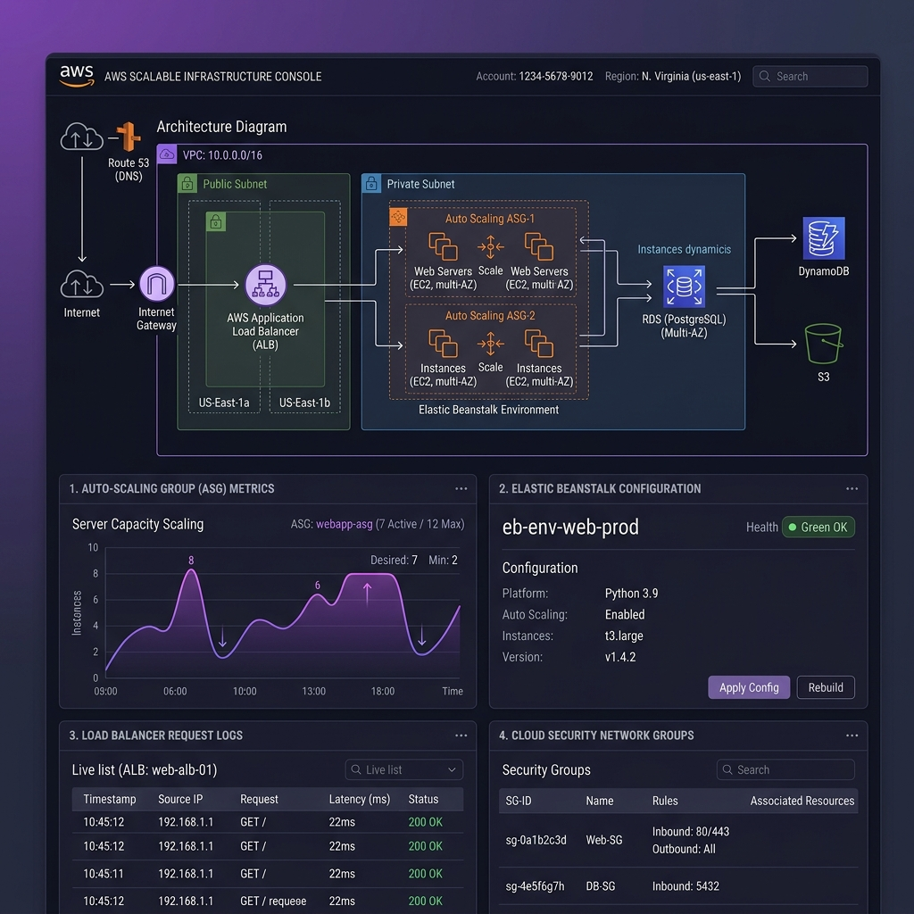
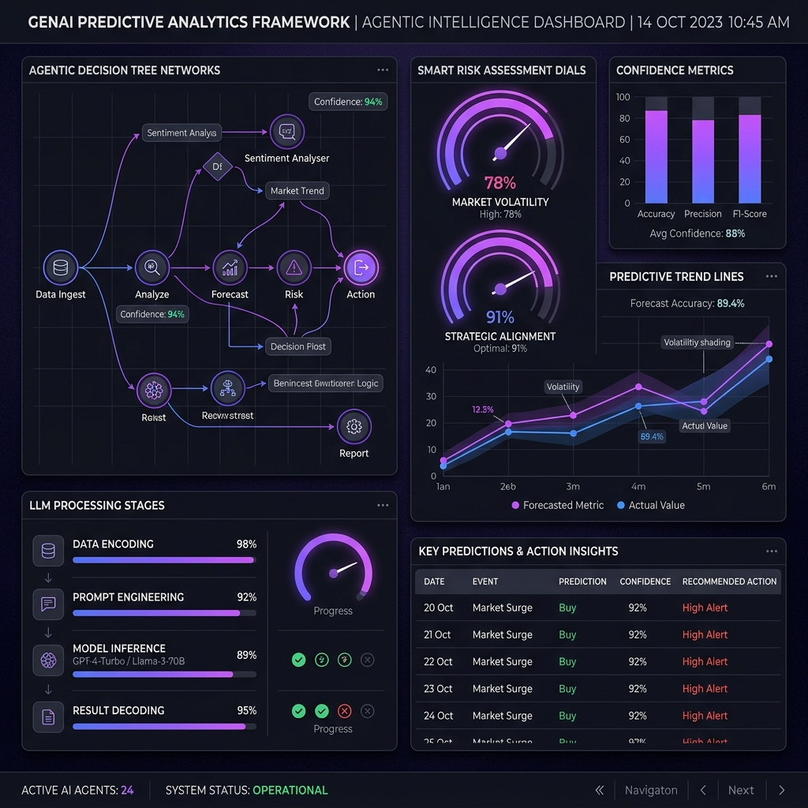
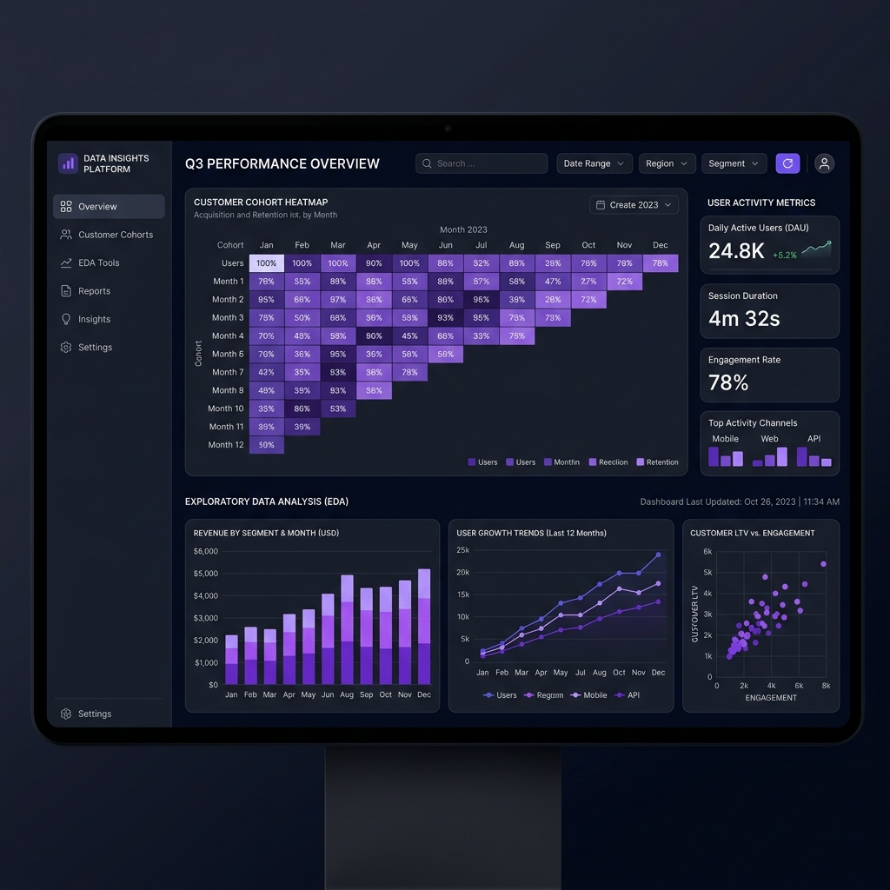

AI Automation & Workflow Engineer
Autonomous Agentic Workflows • LLM Infrastructure
AI Automation & Workflow Engineer specializing in autonomous agentic workflows, LLM-integrated systems, backend infrastructure, and scalable AI operations. Experienced in building scalable automation frameworks that transform business bottlenecks into intelligent, measurable, AI-driven operational pipelines.
Freelance & Project-Based
Designed and deployed AI-integrated workflow systems combining LLM orchestration, backend automation, API integrations, CRM workflows, and operational AI systems for scalable business automation.
Internship
Bachelor of Science in Computer Science